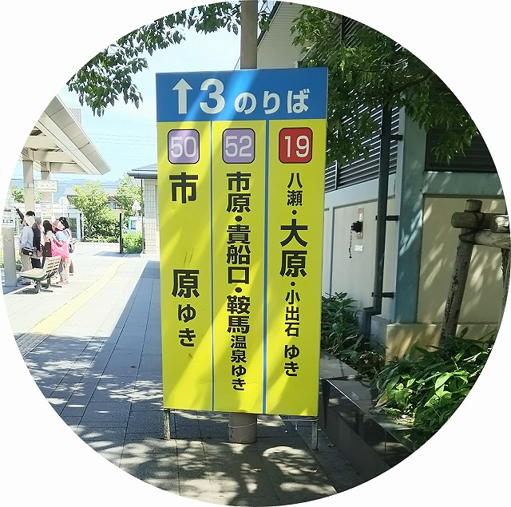
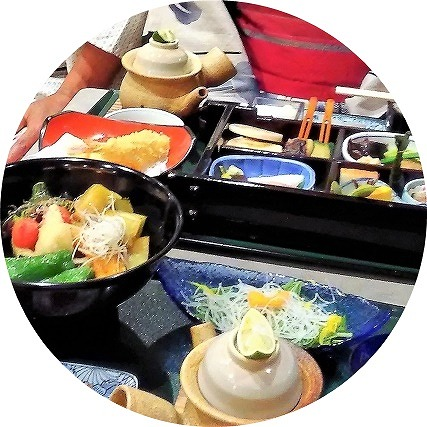

お散歩コース｜前半 貴船山
貴船山ハイキング
縁結びの神様貴船神社参拝と川床料理

貴船→鞍馬 散歩コース順
前半 貴船山
貴船口～貴船神社参拝～川床で食事までの案内です
お散歩時間＝約60分、食事時間＝約60分程になります

貴船へは市バスで向かいます。
ＪＲ京都駅から地下鉄で北大路駅、バスターミナル３番乗り場
５２番のバスで貴船口・鞍馬へ行けます。
※ICOOCAなどが使えるので持っていくと便利！
貴船口で下車、ここからお散歩スタートです。
貴船神社の大鳥居が見えました。
道は二手に分かれてます。バスは鞍馬寺方面右側へ行きます。
貴船神社へは左側へ、京阪鞍馬線・貴船口駅を超えるとバス停がありますが乗りません。
ずーと登りですが急斜面はありません。貴船側のせせらぎを聞きながら貴船山を歩きましょう。
★貴船神社まで約３０分弱
ほぼ中間地点でカフェ「古今藤や」が川側にあります。
貴船、最初の料理旅館「べにや」が見えたら後７分程で到着します。
貴船神社、本殿参拝
まず、お参りしましょう。
鳥居をくぐるといきなり急な階段！
ここまで歩いてずいぶん疲れてると思いますが、景色のいい休憩場所が上にあるので、参拝してから休みましょう。
★三社の参拝に休憩込みで約３０分
土日、祝祭日は参拝も、おみくじも結構混んでいます。時間がかかることを覚悟しておきましょう。
奥宮、中宮への参拝
奥宮→中宮（結社）へ参拝
本殿の参拝後、道順で行くと中宮→奥宮ってなりますが、正しい参拝順は奥宮→中宮だそうです。
奥宮の境内は広くてベンチもあります。
私は本殿より、奥宮で休憩をとることが多いです。
貴船神社全体がパワースポットって言われてますが、私は貴船では奥宮の境内が一番パワーを感じます。
奥宮参拝後に御神木（相生の杉）もしっかり拝みましょう。
中宮（結社）で参拝終わり。

川床でゆっくりお料理を頂きましょう【夏】
流しそうめんや予約なしの弁当などがありますが、やっぱり予約してゆっくりお酒と懐石料理をいただくのがいいですよ。
予約なら大体のお店はアレルギーによるメニューの代替えも対応してくれます
★食事時間 １時間～１時間半
※昼食の後は激しい山越えです、吞みすぎに注意しましょう。